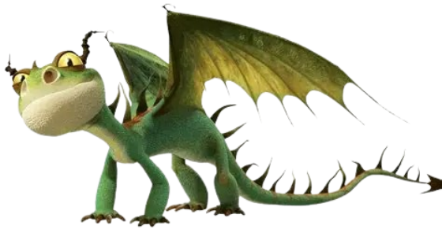

Varies body colour with highlights on back and pink belly
Trainable
Yes
Habitat
All land habitats
Diet
Fish, bread, chicken

Description
The Terrible Terror is a small but feisty dragon known for its mischievous nature and surprising firepower.
Despite its tiny size, it is bold and often seen in swarms overwhelming opponents with numbers. Quick and clever,
it can be trained as a loyal companion, making it a favorite among Viking dragon trainers.